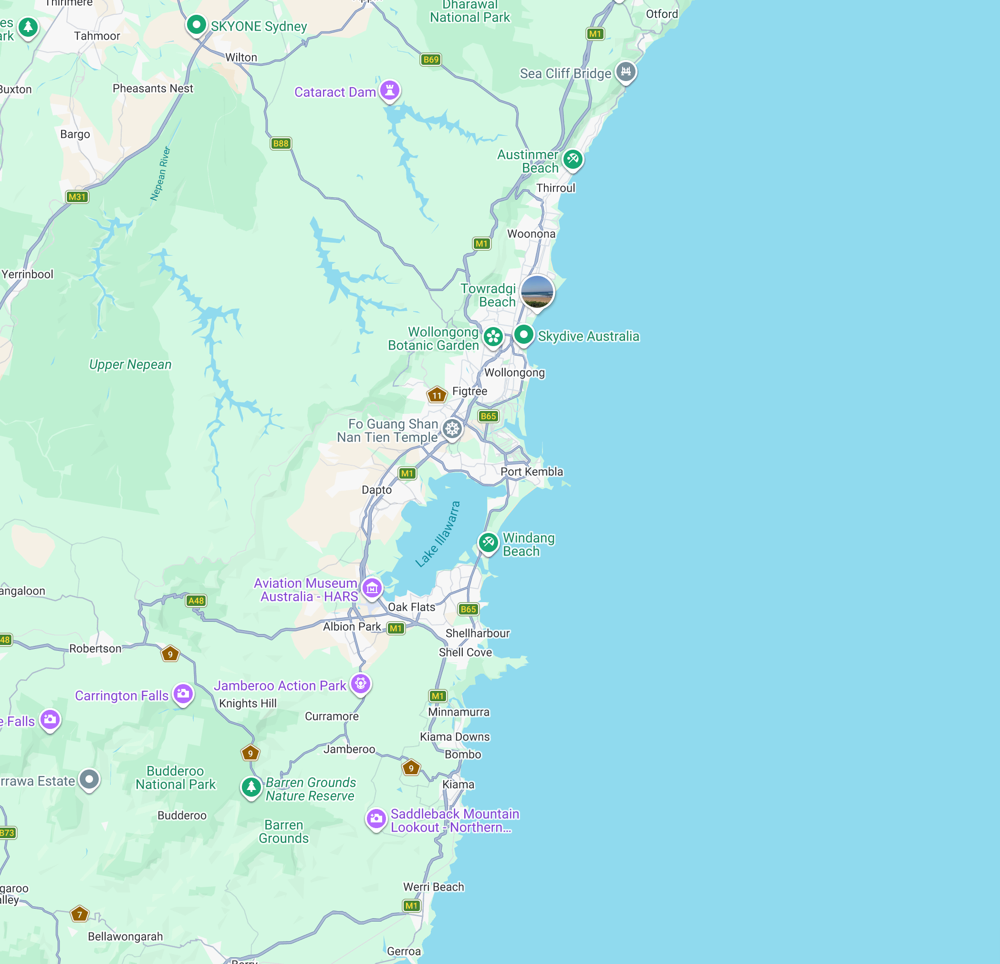

Search real courses at TAFEs and training providers across Australia — and see how to get started.
Leads to: Welder, Metal Fabricator
Enquire at TAFE NSW ↗ Campus availability subject to data verification.Leads to: Mechanical Engineering Draftsperson
Enquire at TAFE NSW ↗ Campus availability subject to data verification.Leads to: Food processing technician, production roles
Enquire at TAFE NSW ↗ Campus availability subject to data verification.
Supporting context only — pins highlight the matching card. Collapsed by default on mobile; page fully usable without it.
Leads to: Welder, Metal Fabricator
Enquire at TAFE NSW ↗ Campus availability subject to data verification.Invalid postcode uses the same inline validation pattern as the quiz — no modal.